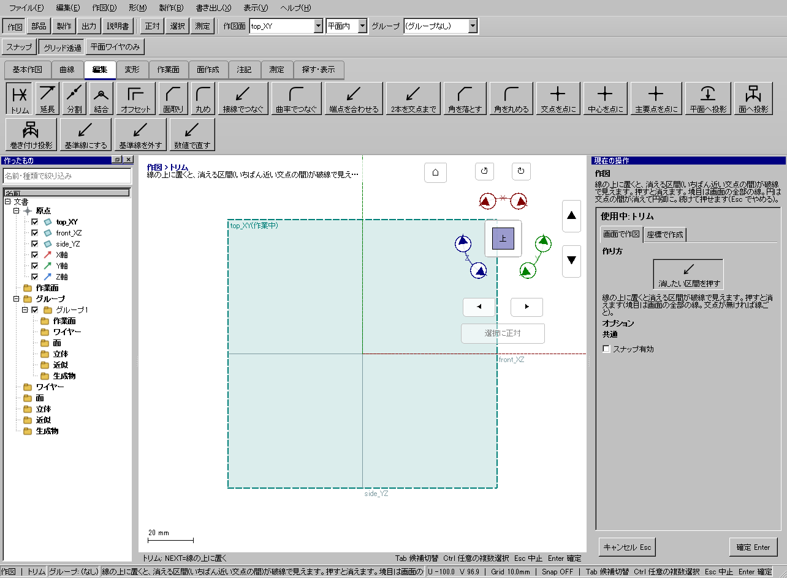
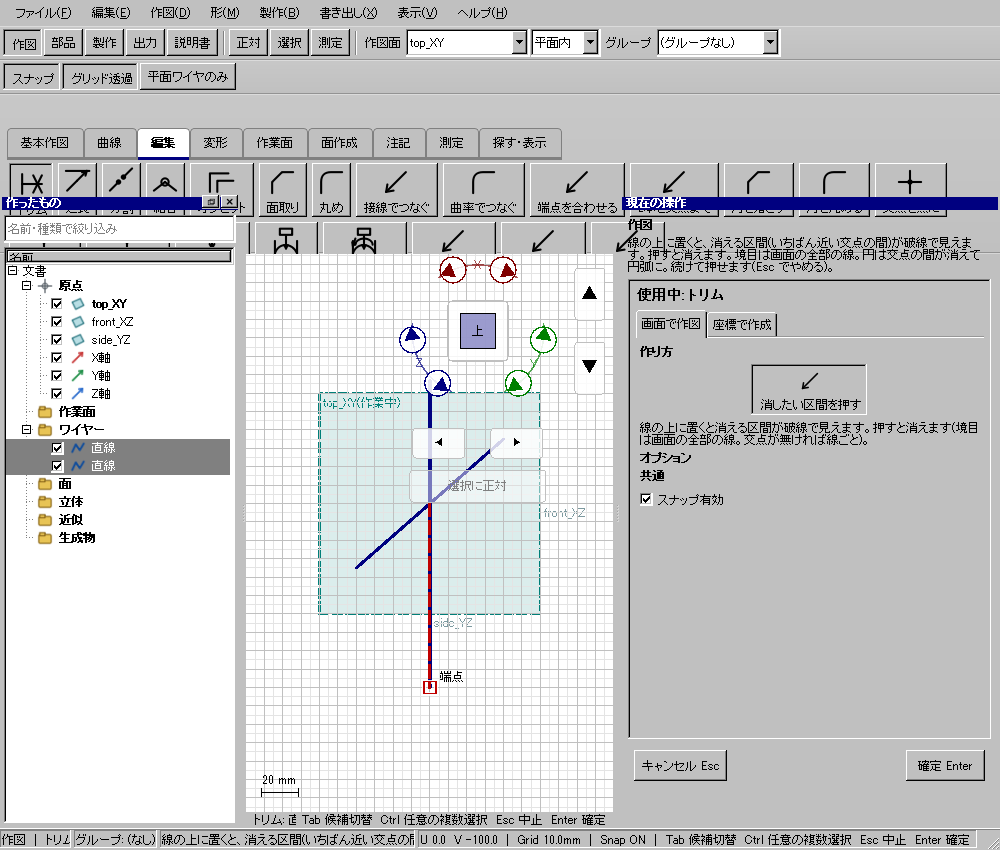

交差線の外側だけを消す
使う機能：トリム
交点の間の区間を取り除く道具です。辺へカーソルを置いた時の赤い区間が削除範囲で、クリックするとその場で適用します。
Aの右半分だけが消える。線全体を選んでDeleteする操作とは異なる。
1 準備 — 元の図形から作る
水平線A(0,0)→(20,0)、縦線B(10,-10)→(10,10)を作る。
まだ用意できていなければ、次の手順を先に行ってください。既にモデルがある場合も、例の座標・大きさ・面の向きを自分のモデルへ読み替えます。
- 指定座標の直線・円・円弧を準備する — 図形の作成から順に練習できます。
- 線・面・部品を取り違えずに選ぶ — 図形の作成から順に練習できます。
練習前にKCD2を別名保存します。数値の長さはmm、角度は度です。平面内のu/vと世界XYZを区別します。
2 使う道具を開く — 押す場所
- 作図 → 編集 → トリム
別の入口：Ctrl+K → トリムを検索 → 候補の用途を確認して開きます。別モードなら「全モードから探す」をオンにします。

3 操作手順 — 一つずつ進める
1 トリムを選ぶ
この段階で確認：この操作で使う入力：水平線A(0,0)→(20,0)、縦線B(10,-10)→(10,10)を作る
2 AのX=15付近を指して消える区間を確認する
この段階で確認：使う対象・値：削除区間: 交点より右
3 クリックする
この段階で確認：Aの右半分だけが消える。線全体を選んでDeleteする操作とは異なる。
4 設定する欄と数値
ボタン名・欄名と、今回使う値を対応させてください。項目が出ていない場合は作り方・モードが合っているか確認し、ペイン内をスクロールします。
| 見る欄・役割 | この例の設定と意味 |
|---|---|
| A | (0,0)→(20,0) |
| B | (10,−10)→(10,10) |
| 押す場所 | Aの右半分 |
| 元の線を残す | 既定はオフ。赤く下見された区間だけを除き、それ以外の直線やR・曲線を残します。オンなら元の線を表示したまま結果を追加します。 |
選択の確認：役割欄の名前と3Dの強調を照合します。重なって拾いにくい時はTabで候補を替えます。全体を使う例では左一覧の要素名を選び、3Dの1辺選択と区別します。

この実画面は既存操作試験の一場面で、下の数値例の完成画像とは限りません。設定・選択の操作画面。具体的な完成例は段階写真のある作業例を参照してください。
5 確定して結果を確認
3Dで対象区間や分割位置を指して、強調を確認してクリックするとその加工を実行します。後から別の確定ボタンを探す必要はありません。
Aの右半分だけが消える。線全体を選んでDeleteする操作とは異なる。
「元の線を残す」がオフなら、赤い区間だけが消え、残る線の形と参照を保ちます。変更前の形状を非表示にして追加することはしません。オンなら元も表示したまま残します。トリムを開始し直すと既定のオフへ戻ります。
線全体を消す際に、それを使う面・部品・寸法も消える場合は、削除する名前一覧と3Dの赤い表示を確認します。「一覧の要素を削除」で進み、取消ではトリムも削除も行いません。参照先を残したい場合は取消し、「元の線を残す」をオンにしてやり直します。部分編集では完成済みのRを残します。参照先の面を作り直せない場合や、他の出力と共有する線を安全に編集できない場合は、理由を表示して変更を取り消します。
6 取消・やり直し・保存
クリック前ならカーソルを外すか別ツールへ切り替えます。適用済みの加工はCtrl+Zです。
モデルの編集正本はKCD2、説明書の編集正本はKCIです。外部へ出力するだけの機能では、出力ファイルと編集元を両方残してください。
進めない場合 — 症状から戻る場所を探す
| 起きていること | 確認して直す場所 |
|---|---|
| 線全体が赤い | 実際の3D交点がないか確認します。Rの接点や重なり区間の端も境界になりますが、画面上だけで重なる別平面の線は境界になりません。 |
| 全体Deleteとの違い＝先に削除区間を必ず見る | 全体Deleteとの違い＝先に削除区間を必ず見る |
この機能の入力条件：線の上に置くと、消える区間(いちばん近い交点の間)が破線で見えます。押すと消えます。
計算中は処理表示を見ます。失敗が出たら、対象・入力条件を変えずに何度も押すのでなく、案内にある対象と条件を確認します。
参考画面の出典と確認範囲
試験名：トリムは道具を持つだけでEscでやめられる。試験全体の結果：passed。画像はコマンド呼出し直後で、入力待ち・下見の場合もあります。各段階の完成証拠ではありません。